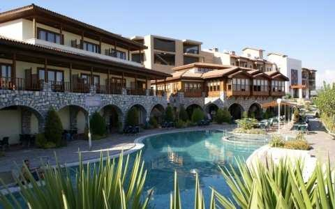
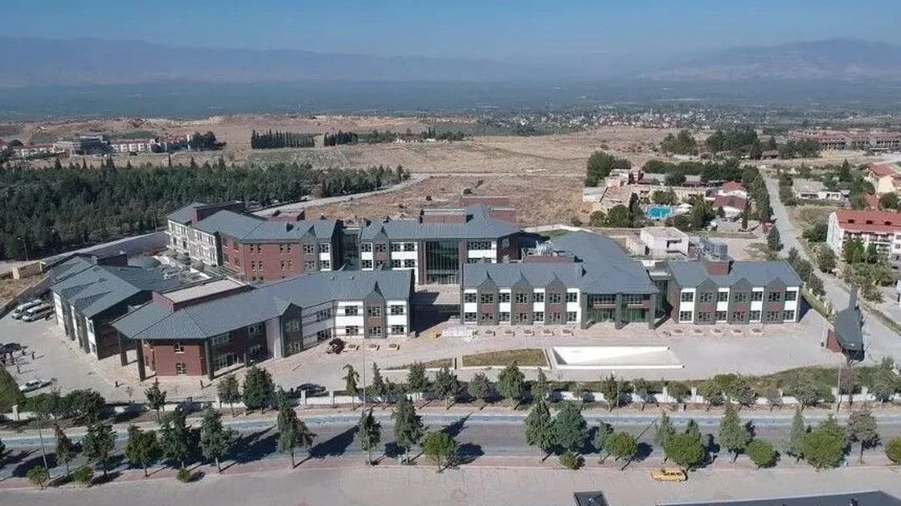

Neden Termal Turizm?
Tesis Önerileri
Pamukkale ve Hierapolis
Pamukkale, travertenleri ve antik Hierapolis kentiyle birlikte UNESCO Dünya Mirası statüsündedir. Sıcak su kaynakları tarih boyunca sağlık amaçlı kullanılmıştır; bugün modern tesisler ziyaretçilere sundukları tedavi paketleriyle öne çıkar.
- Termal suların faydaları: romatizmal rahatsızlıklar, cilt problemleri ve kas-iskelet sistemi ağrılarına iyi geldiği bildirilen mineralli sular.
- Koruma: Travertenlere zarar vermemek için belirlenmiş yürüyüş yollarına ve kurallara uyun.
Öne Çıkan Tesisler ve Hizmetler
Denizli çevresinde hem lüks termal oteller hem de günübirlik kullanıma uygun kaplıcalar bulunur. Tesislerde genellikle şöyledir:
- Spa ve terapi merkezleri (masaj, çamur banyosu, hidroterapi)
- Kür ve medikal programlar (fizyoterapi desteği dahil)
- Aile dostu termal havuzlar ve çocuk alanları
Pratik Bilgiler
- En iyi dönem: Termal tesisler yıl boyunca açıktır; yaz aylarında daha yoğun olabilir, bahar ve kış aylarında sakin ve ekonomik seçenekler bulunur.
- Ne götürmeli: Mayo, terlik, havlu (birçok tesis sağlar ancak kendi havlunuzu tercih edebilirsiniz), reçeteler ve varsa medikal raporlar.
- Sağlık uyarıları: Hamilelik, kalp rahatsızlıkları veya ciddi kronik hastalığı olanların bazı tedavi biçimlerinden önce doktora danışması önerilir.
Günlük Rota Önerisi
Pamukkale ziyaretiniz için örnek bir günlük plan:
- Sabah erken saatlerde travertenleri gezin ve Hierapolis Antik Kenti'ni keşfedin.
- Öğleden sonra bir termal tesiste rahatlama ve spa seansı.
- Akşam yerel mutfağı deneyin; rahat bir konaklama ile dinlenin.
Kaynaklar ve İletişim
Daha fazla bilgi için yerel turizm ofisleri ile iletişime geçin veya tesislerin resmi web sitelerinden güncel paketleri kontrol edin.
Nasıl Giderim? sayfasındaki ulaşım bilgileri termal tesislere ulaşımda yardımcı olacaktır.
Tesis Önerileri
Denizli çevresinde farklı konaklama ve tedavi ihtiyaçlarına göre seçenekler bulunur. Aşağıda kategori bazlı öneriler ve sundukları hizmet tipleri yer almaktadır.

Lüks Termal Oteller
Geniş spa merkezleri, medikal ekip, özel kür programları, restoran ve transfer hizmeti sunarlar. Konfor ve uzun dönem kürler için ideal.

Orta Seviye ve Aile Dostu Tesisler
Günlük termal havuzlar, aile havuzları, ekonomik konaklama paketleri. Aile tatilleri ve kısa süreli ziyaretler için uygun.

Günübirlik Kaplıcalar
Şehir içi veya yakın ilçelerde günübirlik kullanıma uygun tesisler; deneme amaçlı veya hafta sonu dinlenmeleri için ekonomik seçenekler.
PAÜ Projeleri
Bu görseller, Pamukkale Üniversitesi (PAÜ) ile yürütülen çalışmalarla ilişkilidir. Projeler genellikle ilgili bakanlık kurumları ile ortak gerçekleştirilmektedir; dolayısıyla bazı programlar Bakanlık ve PAÜ ortaklığı çerçevesinde planlanmış saha uygulamalarına dayanır. Detaylı proje referansları, proje sorumluları ve resmi ortaklık bilgilerini araştırıp sayfaya kaynaklarla birlikte ekleyebilirim.

Umut Termal Otel (PAÜ İş Birliği)
Umut Termal Otel, üniversite destekli sağlık programlarında saha çalışmaları için kullanılan tesislerden biridir. Rehabilitasyon ve klinik uygulama alanları zaman zaman PAÜ öğrenci-projelerine ev sahipliği yapar.

Rehabilitasyon Merkezi (PAÜ Projesi)
Rehabilitasyon Merkezi çeşitli kür programları ve fizyoterapi uygulamaları için kullanılır; PAÜ ile ortak projeler kapsamında klinik uygulamalar ve araştırmalar yürütülmektedir.
Kür ve Tedavi Programları
Kür programları tesisten tesise değişir; genelde şu hizmetleri içerir:
- Hidroterapi ve termal havuz seansları
- Fizyoterapi ve medikal takip (hekim onayı ile)
- Çamur banyosu, masaj, oksijen terapisi ve nemlendirme programları
- Beslenme danışmanlığı ve dinlenme paketleri
Kür programı seçerken: teşhisinize uygun program, doktor onayı, süre ve tesisin medikal altyapısını göz önünde bulundurun.
Fiyat Aralığı & Tavsiyeler
Fiyatlar sezona, tesisin sınıfına ve paketin süresine göre değişir. Aşağıdaki aralıklar güncellenmeye ihtiyaç duyan tahminlerdir; daha güncel ve doğru rakamlar için resmi kaynaklar ve tesis fiyat listeleri araştırılacaktır.
- Günübirlik giriş: 200–600 TL (tesis ve döneme göre değişir)
- 1 gece konaklama (orta sınıf): 1.200–3.500 TL
- Uzun dönem kür paketleri (7+ gece): 10.000 TL ve üzeri
Tavsiye: erken rezervasyon ve hafta içi tarihler genelde daha ekonomiktir; resmi fiyatları karşılaştırmak için tesislerin kendi sitelerinden veya turizm ofisinden doğrulama yapılmalıdır. İsterseniz ben güvenilir tesis listelerini ve güncel fiyatları araştırıp buraya ekleyebilirim.
Sıkça Sorulan Sorular (SSS)
Harita — Pamukkale (Termal Bölgesi)
Rezervasyon & İletişim
Rezervasyon yapmadan önce tesisin iptal koşullarını, medikal hizmet kapsamını ve transfer seçeneklerini kontrol edin. Aşağıda resmi kurumların genel iletişim bilgileri ve rehber niteliğinde kısa notlar yer almaktadır. (Daha ayrıntılı proje referansları ve tesis iletişimleri araştırılıp eklenecektir.)
- Rezervasyon: Tesisin kendi web sitesi veya doğrudan telefon numarası üzerinden rezervasyon yapın.
- Genel bilgi ve yönergeler: Kültür ve Turizm Bakanlığı resmi duyuruları ve birim fiyat listeleri rehberlik sağlar.
- PAÜ proje sorumluları: PAÜ'nin ilgili fakülte/araştırma merkezleri proje koordinasyonu ve saha uygulamalarıyla ilgilenir; resmi duyurular takip edilmelidir.
Resmi Kaynaklar ve İletişim
Aşağıda, bu sayfadaki bilgileri güncellemek için başvurabileceğimiz başlıca resmi kaynaklar listelenmiştir:
- Kültür ve Turizm Bakanlığı — Birim Fiyatları (Mart 2026 güncellemesi) (resmi fiyat rehberi ve sertifikalı tesis listeleri için başlangıç noktası).
- T.C. Sağlık Bakanlığı — İletişim (genel sağlık politikaları, medikal onay ve hasta yönlendirmeleri için başvurulacak kurum).
- Pamukkale Üniversitesi (PAÜ) — proje duyuruları ve akademik iş birlikleri; PAÜ sayfalarındaki proje ve araştırma merkezleri duyuruları doğrulanacak.
Telefon (kılavuz): Kültür ve Turizm Bakanlığı Santral: +90 312 470 80 00; Sağlık Bakanlığı Santral: +90 312 585 10 00.
Not: Bu bölümdeki bilgiler resmi kaynaklardan alınmıştır; PAÜ-Bakanlık ortak projeleri ve güncel fiyatlar için daha ayrıntılı tarama yapıp doğrudan proje dokümanları ve tesislerin fiyat listelerini ekleyeceğim.